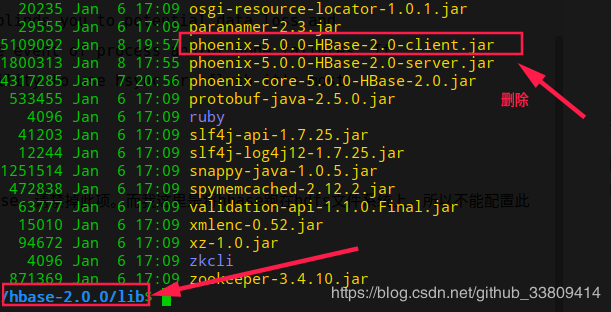

<!DOCTYPE html><html lang="en"><head><meta name="generator" content="Hexo 3.9.0"><meta charset="utf-8"><meta name="keywords" content="个人博客, 松林羊, ysl, songlinsheep, andus, blog, 个人站点, 个人网站"><meta name="description" content="松林羊的个人网站，用于记录，分享。欢迎交流^-^"><meta name="viewport" content="width=device-width,initial-scale=1,maximum-scale=1"><title> Hbase 启动失败，Please check the config value of &#39;hbase.procedure.store.wal.use.hsync&#39; | 松林羊</title><link rel="shortcut icon" href="/smile.ico"><link rel="stylesheet" href="/css/style.css"><link rel="stylesheet" href="/fancybox/jquery.fancybox.min.css"><script src="/js/pace.min.js"></script><script>!function(e,t,o,c,i,a,n){e.DaoVoiceObject=i,e[i]=e[i]||function(){(e[i].q=e[i].q||[]).push(arguments)},e[i].l=1*new Date,a=t.createElement(o),n=t.getElementsByTagName(o)[0],a.async=1,a.src=c,a.charset="utf-8",n.parentNode.insertBefore(a,n)}(window,document,"script",("https:"==document.location.protocol?"https:":"http:")+"//widget.daovoice.io/widget/0f81ff2f.js","daovoice"),daovoice("init",{app_id:"1559132c"}),daovoice("update")</script></head></html><body><main class="content"><section class="outer"><article id="post-Hbase-启动失败，Please-check-the-config-value-of-hbase-procedure-store-wal-use-hsync" class="article article-type-post" itemscope itemprop="blogPost" data-scroll-reveal><div class="article-inner"><header class="article-header"><h1 class="article-title" itemprop="name"> Hbase 启动失败，Please check the config value of &#39;hbase.procedure.store.wal.use.hsync&#39;</h1></header><div class="article-meta"> <a href="/2019/01/08/Hbase-启动失败，Please-check-the-config-value-of-hbase-procedure-store-wal-use-hsync/" class="article-date"><time datetime="2019-01-08T12:08:36.000Z" itemprop="datePublished">2019-01-08</time></a><div class="article-category"> <a class="article-category-link" href="/categories/数据库/">数据库</a></div> &emsp;<i class="fe fe-bar-chart"></i> <span class="post-count">867</span>字 &emsp;<i class="fe fe-clock"></i> <span class="post-count">4</span>分钟</div><div class="article-entry" itemprop="articleBody"><blockquote><p>环境：<br>JDK1.8<br>Hadoop 2.7.1<br>Zookeeper 3.4.6<br>Hbase 2.0.0<br>Apache Phoenix-5.0.0-Hbase-2.0.0</p></blockquote><p>从hadoop到hbase的环境搭建一切正常，可直接参照网上教程，这里不累述。</p><p>这里记录一下我在配置phoenix连接hbase的时候遇到的问题。<br>直观的看是HMaster先能启动，过一会又自动挂掉。日志错误信息如下：</p><figure class="highlight java"><table><tr><td class="gutter"><pre><span class="line">1</span><br><span class="line">2</span><br><span class="line">3</span><br><span class="line">4</span><br><span class="line">5</span><br><span class="line">6</span><br><span class="line">7</span><br><span class="line">8</span><br><span class="line">9</span><br><span class="line">10</span><br><span class="line">11</span><br></pre></td><td class="code"><pre><span class="line">ERROR [master/YSL-MASTER:<span class="number">16000</span>] master.HMaster: Failed to become active master</span><br><span class="line">java.lang.IllegalStateException: The procedure WAL relies on the ability to hsync <span class="keyword">for</span> proper operation during component failures, but the underlying filesystem does not support doing so. Please check the config value of <span class="string">'hbase.procedure.store.wal.use.hsync'</span> to set the desired level of robustness and ensure the config value of <span class="string">'hbase.wal.dir'</span> points to a FileSystem mount that can provide it.</span><br><span class="line">	at org.apache.hadoop.hbase.procedure2.store.wal.WALProcedureStore.rollWriter(WALProcedureStore.java:<span class="number">1043</span>)</span><br><span class="line">	at org.apache.hadoop.hbase.procedure2.store.wal.WALProcedureStore.recoverLease(WALProcedureStore.java:<span class="number">382</span>)</span><br><span class="line">	at org.apache.hadoop.hbase.procedure2.ProcedureExecutor.start(ProcedureExecutor.java:<span class="number">530</span>)</span><br><span class="line">	at org.apache.hadoop.hbase.master.HMaster.startProcedureExecutor(HMaster.java:<span class="number">1222</span>)</span><br><span class="line">	at org.apache.hadoop.hbase.master.HMaster.startServiceThreads(HMaster.java:<span class="number">1141</span>)</span><br><span class="line">	at org.apache.hadoop.hbase.master.HMaster.finishActiveMasterInitialization(HMaster.java:<span class="number">849</span>)</span><br><span class="line">	at org.apache.hadoop.hbase.master.HMaster.startActiveMasterManager(HMaster.java:<span class="number">2019</span>)</span><br><span class="line">	at org.apache.hadoop.hbase.master.HMaster.run(HMaster.java:<span class="number">553</span>)</span><br><span class="line">	at java.lang.Thread.run(Thread.java:<span class="number">748</span>)</span><br></pre></td></tr></table></figure><p>官网说明：<a href="http://hbase.apache.org/book.html#trouble.master.startup.hsync。" target="_blank" rel="noopener">http://hbase.apache.org/book.html#trouble.master.startup.hsync。</a> 看了之后还是不知道怎么解决。</p><p>自己尝试了很多方法，换hadoop版本、修改hbase配置，替换hbase/lib目录下hadoop相关jar包(先删除原jar包)，这里记录一下替换命令：<code>find /usr/local/hadoop-2.7.1/share/hadoop -name "hadoop*jar" | xargs -i cp {} /usr/local/hbase-2.0.0/lib/</code> 。网上也有说换hbase版本(未尝试)。<br>网上最多的方法就是：</p><figure class="highlight xml"><table><tr><td class="gutter"><pre><span class="line">1</span><br><span class="line">2</span><br><span class="line">3</span><br><span class="line">4</span><br><span class="line">5</span><br><span class="line">6</span><br><span class="line">7</span><br><span class="line">8</span><br><span class="line">9</span><br><span class="line">10</span><br><span class="line">11</span><br><span class="line">12</span><br><span class="line">13</span><br><span class="line">14</span><br><span class="line">15</span><br></pre></td><td class="code"><pre><span class="line">hbase/conf/hbase-site.xml增加配置 </span><br><span class="line"><span class="tag">&lt;<span class="name">property</span>&gt;</span></span><br><span class="line">	<span class="tag">&lt;<span class="name">name</span>&gt;</span>hbase.unsafe.stream.capability.enforce<span class="tag">&lt;/<span class="name">name</span>&gt;</span></span><br><span class="line">	<span class="tag">&lt;<span class="name">value</span>&gt;</span>false<span class="tag">&lt;/<span class="name">value</span>&gt;</span></span><br><span class="line">	<span class="tag">&lt;<span class="name">description</span>&gt;</span></span><br><span class="line">		Controls whether HBase will check for stream capabilities (hflush/hsync).</span><br><span class="line">	    Disable this if you intend to run on LocalFileSystem, denoted by a rootdir</span><br><span class="line">	    with the 'file://' scheme, but be mindful of the NOTE below.</span><br><span class="line">	    WARNING: Setting this to false blinds you to potential data loss and</span><br><span class="line">	    inconsistent system state in the event of process and/or node failures. If</span><br><span class="line">	    HBase is complaining of an inability to use hsync or hflush it's most</span><br><span class="line">	    likely not a false positive.</span><br><span class="line">    <span class="tag">&lt;/<span class="name">description</span>&gt;</span></span><br><span class="line"><span class="tag">&lt;/<span class="name">property</span>&gt;</span></span><br><span class="line">该配置的作用是：如果你打算在本地文件系统中跑hbase，请禁掉此项。而我这里是将hbase跑在hdfs文件系统上，所以不能配置此项。</span><br></pre></td></tr></table></figure><p>我的解决方法：删除<font color="red">每个节点</font>hbase/lib目录下的<code>phoenix-××-client.jar</code>包，重启hbase即可。<br><br>具体原因我也还没搞清楚，以后再更新。<br>附上：<a href="http://hbase.apache.org/book.html#hadoop" target="_blank" rel="noopener">hadoop-hbase 版本对应关系</a></p><p>记录下hbase/conf/hbase-site.xml中添加的配置：</p><figure class="highlight xml"><table><tr><td class="gutter"><pre><span class="line">1</span><br><span class="line">2</span><br><span class="line">3</span><br><span class="line">4</span><br><span class="line">5</span><br><span class="line">6</span><br><span class="line">7</span><br><span class="line">8</span><br><span class="line">9</span><br><span class="line">10</span><br><span class="line">11</span><br><span class="line">12</span><br><span class="line">13</span><br><span class="line">14</span><br><span class="line">15</span><br><span class="line">16</span><br><span class="line">17</span><br><span class="line">18</span><br><span class="line">19</span><br><span class="line">20</span><br><span class="line">21</span><br><span class="line">22</span><br><span class="line">23</span><br><span class="line">24</span><br><span class="line">25</span><br><span class="line">26</span><br><span class="line">27</span><br><span class="line">28</span><br><span class="line">29</span><br><span class="line">30</span><br></pre></td><td class="code"><pre><span class="line"><span class="tag">&lt;<span class="name">property</span>&gt;</span></span><br><span class="line">  	<span class="tag">&lt;<span class="name">name</span>&gt;</span>phoenix.schema.isNamespaceMappingEnabled<span class="tag">&lt;/<span class="name">name</span>&gt;</span></span><br><span class="line">    <span class="tag">&lt;<span class="name">value</span>&gt;</span>true<span class="tag">&lt;/<span class="name">value</span>&gt;</span></span><br><span class="line">    <span class="tag">&lt;<span class="name">description</span>&gt;</span>开启schema与namespace的对应关系<span class="tag">&lt;/<span class="name">description</span>&gt;</span></span><br><span class="line"><span class="tag">&lt;/<span class="name">property</span>&gt;</span></span><br><span class="line"><span class="tag">&lt;<span class="name">property</span>&gt;</span></span><br><span class="line">	<span class="tag">&lt;<span class="name">name</span>&gt;</span>phoenix.schema.mapSystemTablesToNamespace<span class="tag">&lt;/<span class="name">name</span>&gt;</span></span><br><span class="line">  	<span class="tag">&lt;<span class="name">value</span>&gt;</span>true<span class="tag">&lt;/<span class="name">value</span>&gt;</span></span><br><span class="line">  	<span class="tag">&lt;<span class="name">description</span>&gt;</span>开启schema与namespace的对应关系<span class="tag">&lt;/<span class="name">description</span>&gt;</span></span><br><span class="line"><span class="tag">&lt;/<span class="name">property</span>&gt;</span></span><br><span class="line"><span class="tag">&lt;<span class="name">property</span>&gt;</span></span><br><span class="line">    <span class="tag">&lt;<span class="name">name</span>&gt;</span>phoenix.functions.allowUserDefinedFunctions<span class="tag">&lt;/<span class="name">name</span>&gt;</span></span><br><span class="line">    <span class="tag">&lt;<span class="name">value</span>&gt;</span>true<span class="tag">&lt;/<span class="name">value</span>&gt;</span></span><br><span class="line">    <span class="tag">&lt;<span class="name">description</span>&gt;</span>允许用户自定义函数(UDF)<span class="tag">&lt;/<span class="name">description</span>&gt;</span></span><br><span class="line"><span class="tag">&lt;/<span class="name">property</span>&gt;</span></span><br><span class="line"><span class="tag">&lt;<span class="name">property</span>&gt;</span></span><br><span class="line">    <span class="tag">&lt;<span class="name">name</span>&gt;</span>hbase.regionserver.wal.codec<span class="tag">&lt;/<span class="name">name</span>&gt;</span></span><br><span class="line">    <span class="tag">&lt;<span class="name">value</span>&gt;</span>org.apache.hadoop.hbase.regionserver.wal.IndexedWALEditCodec<span class="tag">&lt;/<span class="name">value</span>&gt;</span></span><br><span class="line">    <span class="tag">&lt;<span class="name">description</span>&gt;</span>开启phoenix 二级索引<span class="tag">&lt;/<span class="name">description</span>&gt;</span></span><br><span class="line"><span class="tag">&lt;/<span class="name">property</span>&gt;</span></span><br><span class="line"><span class="tag">&lt;<span class="name">property</span>&gt;</span></span><br><span class="line">    <span class="tag">&lt;<span class="name">name</span>&gt;</span>hbase.regionserver.executor.openregion.threads<span class="tag">&lt;/<span class="name">name</span>&gt;</span> </span><br><span class="line">    <span class="tag">&lt;<span class="name">value</span>&gt;</span>100<span class="tag">&lt;/<span class="name">value</span>&gt;</span></span><br><span class="line">    <span class="tag">&lt;<span class="name">description</span>&gt;</span>打开用户表region的线程数量(默认3)<span class="tag">&lt;/<span class="name">description</span>&gt;</span></span><br><span class="line"><span class="tag">&lt;/<span class="name">property</span>&gt;</span></span><br><span class="line"><span class="tag">&lt;<span class="name">property</span>&gt;</span></span><br><span class="line">    <span class="tag">&lt;<span class="name">name</span>&gt;</span>phoenix.default.column.encoded.bytes.attrib<span class="tag">&lt;/<span class="name">name</span>&gt;</span></span><br><span class="line">    <span class="tag">&lt;<span class="name">value</span>&gt;</span>0<span class="tag">&lt;/<span class="name">value</span>&gt;</span></span><br><span class="line">    <span class="tag">&lt;<span class="name">description</span>&gt;</span>不对hbase列进行编码存储<span class="tag">&lt;/<span class="name">description</span>&gt;</span></span><br><span class="line"><span class="tag">&lt;/<span class="name">property</span>&gt;</span></span><br></pre></td></tr></table></figure></div><footer class="article-footer"><ul class="article-tag-list"><li class="article-tag-list-item"><a class="article-tag-list-link" href="/tags/Hbase/">Hbase</a></li><li class="article-tag-list-item"><a class="article-tag-list-link" href="/tags/大数据/">大数据</a></li></ul><div style="text-align:center;color:#ccc;font-size:14px;margin-top:10px"> ------------- 本文结束&nbsp;<i class="fe fe-smile"></i>&nbsp;感谢您的阅读 -------------</div></footer></div><nav class="article-nav"> <a href="/2019/01/15/Phoenix-varchar-空串等于null的坑/" class="article-nav-link"><strong class="article-nav-caption">前一篇</strong><div class="article-nav-title"> Phoenix varchar 空串等于null的坑</div></a> <a href="/2018/12/24/Linux下-创建tomcat启动关闭快捷方式/" class="article-nav-link"><strong class="article-nav-caption">后一篇</strong><div class="article-nav-title">Linux下 创建tomcat启动关闭快捷方式</div></a></nav><div class="comment_headling" style="margin-top:5rem"><font size="5"><i class="fe fe-comments"></i> 评论</font></div><div class="comment"></div><script src="https://cdn1.lncld.net/static/js/3.0.4/av-min.js"></script><script src="/js/Valine.min.js"></script><script type="text/javascript">GUEST_INFO=["nick","mail","link"],guest_info="nick,mail,link".split(",").filter(function(i){return-1<GUEST_INFO.indexOf(i)}),guest_info=0==guest_info.length?GUEST_INFO:guest_info,new Valine({av:AV,el:".comment",app_id:"fq4O7Xaf1cYDbADGellNEn6V-gzGzoHsz",app_key:"a626rNIHkVVk8tGBBCfaQjb9",placeholder:"记得留下你的昵称和邮箱...可以快速收到回复ヾﾉ≧∀≦)o",meta:guest_info,notify:!0,verify:!1,avatar:"monsterid",recordIP:!0,visitor:!1,lang:"zh-cn"})</script></article></section><footer class="footer"><div class="outer"><ul class="list-inline"><li>已分享 45 篇博文，累计 <span class="post-count">46.7k</span> 字</li><ul class="list-inline"><li><i class="fe fe-smile-alt"></i>&nbsp;访客数&emsp;<span id="busuanzi_value_site_uv"></span></li><li><i class="fe fe-bookmark"></i>&nbsp;文章访问量&emsp;<span id="busuanzi_value_page_pv"></span></li></ul></ul><ul class="list-inline"><li><span id="timeDate">载入天数...</span><span id="times">载入时分秒...</span></li><script>var now=new Date;function createtime(){var n=new Date("07/28/2019 10:02:00");now.setTime(now.getTime()+250),days=(now-n)/1e3/60/60/24,dnum=Math.floor(days),hours=(now-n)/1e3/60/60-24*dnum,hnum=Math.floor(hours),1==String(hnum).length&&(hnum="0"+hnum),minutes=(now-n)/1e3/60-1440*dnum-60*hnum,mnum=Math.floor(minutes),1==String(mnum).length&&(mnum="0"+mnum),seconds=(now-n)/1e3-86400*dnum-3600*hnum-60*mnum,snum=Math.round(seconds),1==String(snum).length&&(snum="0"+snum),document.getElementById("timeDate").innerHTML="已等候你 "+dnum+" 天 ",document.getElementById("times").innerHTML=hnum+" 小时 "+mnum+" 分 "+snum+" 秒"}setInterval("createtime()",250)</script><ul class="list-inline"><li>&copy; 2019-2019 松林羊</li><li>Theme <a href="https://github.com/zhwangart/hexo-theme-ocean">Ocean</a></li></ul></ul></div></footer></main><aside class="sidebar sidebar-specter"> <button class="navbar-toggle"></button><nav class="navbar"><div class="logo"> <a href="/"></a></div><ul class="nav nav-main"><li class="nav-item"> <a class="nav-item-link" href="/" target="_self">主页</a></li><li class="nav-item"> <a class="nav-item-link" href="/archives" target="_self">归档</a></li><li class="nav-item"> <a class="nav-item-link" href="/categories" target="_self">分类</a></li><li class="nav-item"> <a class="nav-item-link" href="/tags" target="_self">标签</a></li><li class="nav-item"> <a class="nav-item-link" href="/links" target="_self">友链</a></li><li class="nav-item"> <a class="nav-item-link">综合</a><ul class="nav nav-main nav2"><li class="nav-item li2"> <a class="nav-item-link-child" href="/resource" target="_self">资 源</a></li><li class="nav-item li2"> <a class="nav-item-link-child" href="/site" target="_self">网 站</a></li></ul></li><li class="nav-item"> <a class="nav-item-link">关于</a><ul class="nav nav-main nav2"><li class="nav-item li2"> <a class="nav-item-link-child" href="/me" target="_self">博 主</a></li><li class="nav-item li2"> <a class="nav-item-link-child" href="http://stars.andus.top/" target="_blank">记 录</a></li><li class="nav-item li2"> <a class="nav-item-link-child" href="/plan" target="_self">计 划</a></li></ul></li><li class="nav-item"> <a class="nav-item-link" href="http://resume.andus.top/" target="_blank">简 历</a></li><li class="nav-item"><a class="nav-item-link nav-item-search" title="搜索"><i class="fe fe-search"></i> 搜索</a></li></ul></nav><nav class="navbar navbar-bottom"><ul class="nav"><li class="nav-item"><div class="totop" id="totop"><i class="fe fe-rocket"></i></div></li><li class="nav-item"></li></ul></nav><div class="search-form-wrap"><div class="local-search local-search-plugin"> <input type="search" id="local-search-input" class="local-search-input" placeholder="Search..."><div id="local-search-result" class="local-search-result"></div></div></div></aside><script src="/js/jquery-2.0.3.min.js"></script><script src="/js/jquery.justifiedGallery.min.js"></script><script src="/js/lazyload.min.js"></script><script src="/js/busuanzi-2.3.pure.min.js"></script><script src="/fancybox/jquery.fancybox.min.js"></script><script src="/js/tocbot.min.js"></script><script>900<=document.body.clientWidth&&tocbot.init({tocSelector:".tocbot",contentSelector:".article-entry",headingSelector:"h1, h2, h3, h4, h5, h6",hasInnerContainers:!0,scrollSmooth:!0,positionFixedSelector:".tocbot",positionFixedClass:"is-position-fixed",fixedSidebarOffset:"auto"})</script><script src="/js/ocean.js"></script><script src="/js/andus.js"></script><script src="/js/love.js"></script><script>$("img:not(#andus-head-img)").each(function(){$(this).wrap('<a class="fancybox" data-fancybox="gallery" href="'+$(this).prop("src")+'"></a>')})</script><script src="/live2dw/lib/L2Dwidget.min.js?094cbace49a39548bed64abff5988b05"></script><script>L2Dwidget.init({model:{scale:1,hHeadPos:.5,vHeadPos:.618,jsonPath:"/live2dw/assets/haruto.model.json"},display:{superSample:2,width:150,height:300,position:"left",hOffset:0,vOffset:-20},mobile:{show:!1},react:{opacityDefault:.5,opacityOnHover:.2},log:!1,pluginJsPath:"lib/",pluginModelPath:"assets/",pluginRootPath:"live2dw/",tagMode:!1})</script></body>